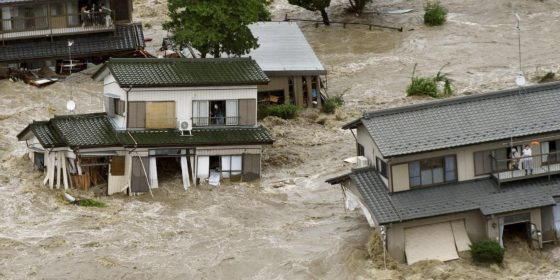

Понятие наводнения
и его разновидности

Определение. Временное значительное затопление местности водой в результате подъёма её уровня в реке, озере или на море, а также образование временных водотоков.
1 место в россии
746 городов
2 место по жертвам
Наводнения занимают первое место среди опасных гидрологических явлений по частоте, площади и ущербу, а по числу жертв — второе после землетрясений.
По причинам возникновения
- Половодье — периодический подъём из-за таяния снега или ледников; заторы (нагромождение льда) и зажоры (внутриводный рыхлый лёд).
- Паводок — интенсивный кратковременный подъём от обильных дождей, ливней, быстрого таяния при оттепелях.
- Ветровой нагон — подъём воды под действием ветра в морских устьях рек, на наветренных берегах озёр и водохранилищ.
- Цунами — длинные морские гравитационные волны от сдвига дна при землетрясениях и извержениях (скорость 50–1000 км/ч).
- Прорыв гидротехнических сооружений.